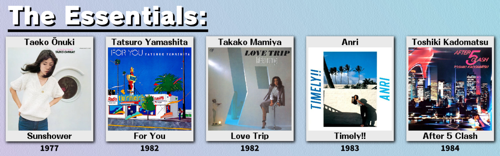
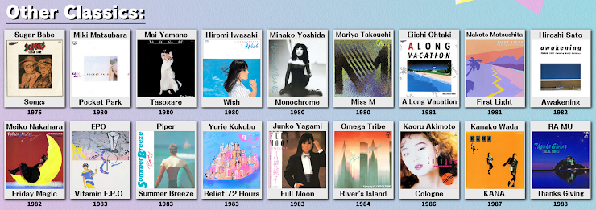
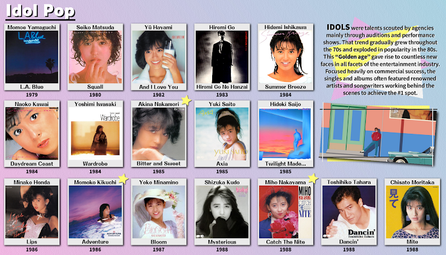
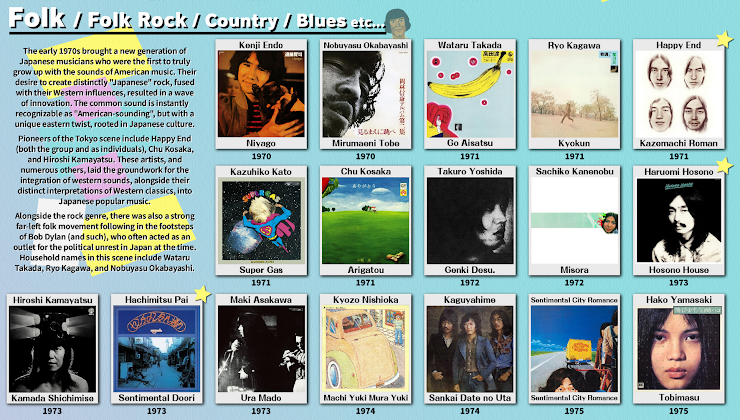
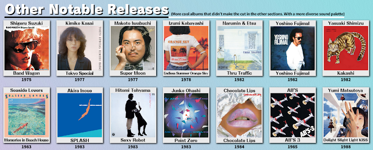
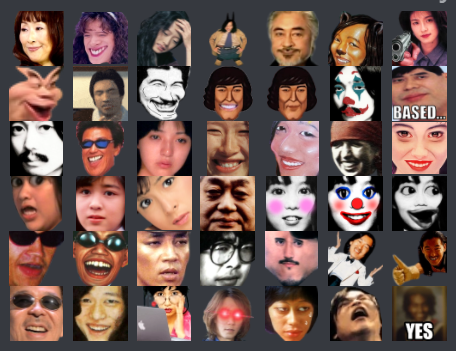
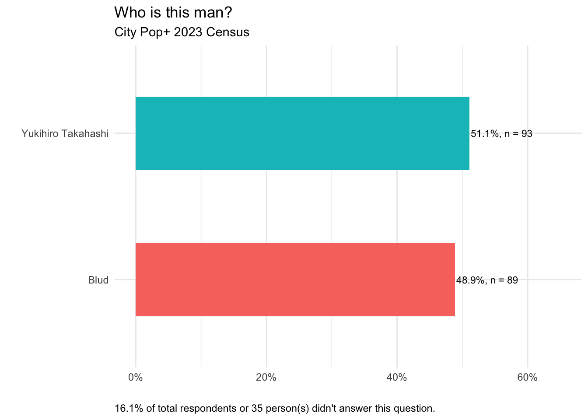

City Pop+ Server Census 2023
Survey conducted between December 25, 2022 and January 2, 2023. A total of 217 server members responded.
Demographics
Age
Gender
Region
US state
Year joined server
Interaction with City Pop
Years known city pop
Where discovered city pop
| Other responses |
|---|
| beatmaps on osu |
| Everyone got recommended plastic love aroynd 2018-19 |
| Gawr Gura singing Ride on Time during one of her karaoke streams |
| general japanese music awareness |
| Gone gone thank you - Tyler the creator samples Fragile by Tatsuro |
| Heard it in a game |
| i love YMO |
| it was natural progression from funk |
| Light in the Attic Pacific Breeze compilations |
| Livejournal communities that shared and discuss J-Pop from the 2000s and retro. |
| Marty |
| Searched up 80s jpop after listening to dame da ne from yakuza |
| Spotify algorithm |
| Spotify and reddit recommendations |
| Spotify recs |
| Terminal Passage and other similar channels got me into j music |
| through the vtuber known as a gawr gura in early 2021 |
| Yakuza 0 |
Where one listens to city pop

Preferred format for listening
Physical media ownership
Communities outside Discord
Welcome Chart questions
Essentials

Other classics

Idol pop

Jazz fusion

Synthpop

Folk

Other notables

Shenanigans and tomfoolery
Fave emote

Fave sticker

YMO
Relationship status
Obi
Casiopea
Blud
